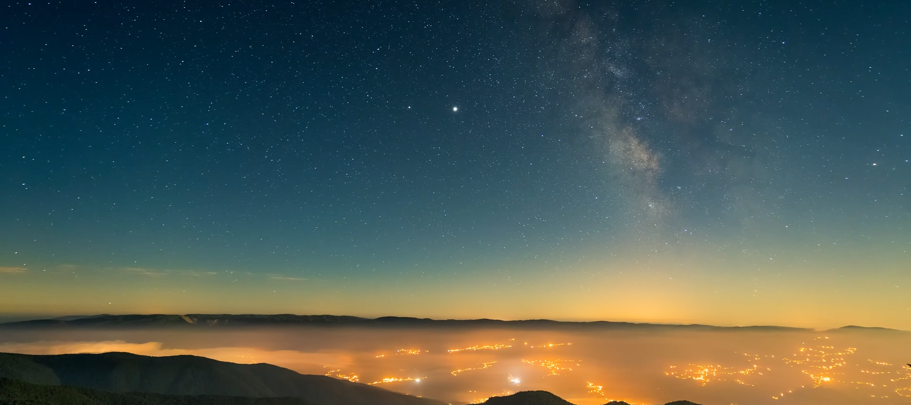
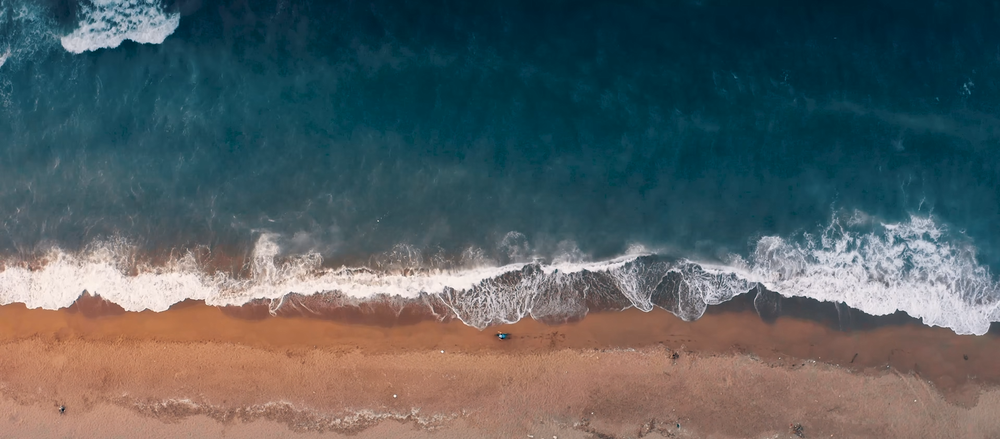
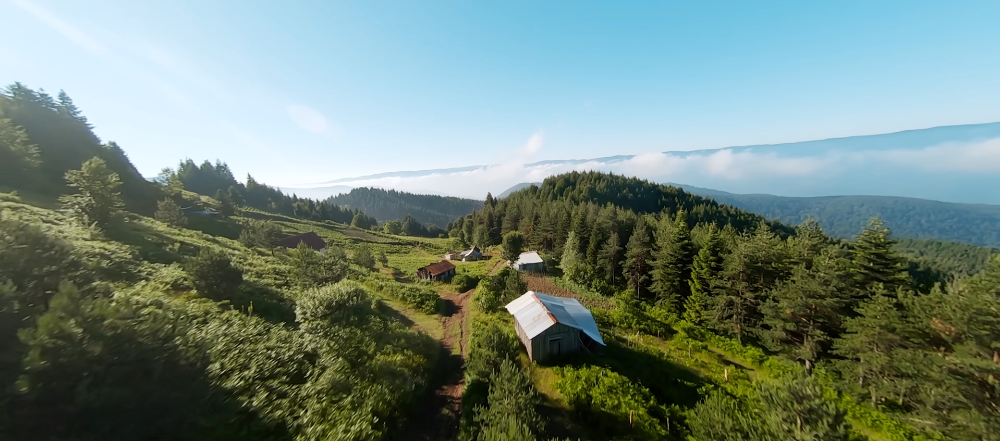

--------------------
Nestled in Turkey’s Sakarya province, Sapanca is a charming town renowned for its natural beauty and tranquil atmosphere. At the heart of this picturesque destination lies Lake Sapanca, offering visitors a unique experience with its stunning scenery. You can enjoy a peaceful walk along the lakeside, go cycling, or have a relaxing picnic surrounded by nature. The nearby forests and highlands provide perfect spots for hiking and photography enthusiasts. Local cafes and restaurants serve up delicious regional flavors, while a wide range of accommodation options cater to every budget. Whether you're looking for a quiet retreat or an outdoor adventure, Sapanca is the perfect getaway to reconnect with nature.

--------------------
Karasu is a charming seaside town located in Sakarya province, along the shores of the Black Sea. Known for its natural beauty and peaceful ambiance, Karasu becomes a favorite summer escape for those looking to enjoy the sun, sea, and sand. The town boasts long, wide beaches and pristine shores, making it ideal for swimming and sunbathing. Nature lovers will also be captivated by the nearby Acarlar Floodplain Forest, a unique natural wonder perfect for exploration. Visitors can savor fresh seafood at local fish restaurants and discover the area’s historical and cultural sites, making for a truly memorable holiday experience.

--------------------
Located at the heart of the province, Adapazarı stands out with its blend of rich history and natural charm. Surrounded by fertile lands and lush greenery, the area is perfect for those seeking a peaceful yet culturally enriching experience. The Sakarya River, flowing through the city, offers scenic walking paths and inviting picnic spots. For history enthusiasts, landmarks such as the Ottoman-era Arifiye Train Station and the historic Orhan Mosque are must-see attractions. No visit is complete without tasting local delicacies like kabak tatlısı (pumpkin dessert) and ıslama köfte (steamed meatballs in broth-soaked bread). With its calm atmosphere, nature-filled surroundings, and welcoming locals, Adapazarı promises a truly memorable journey.